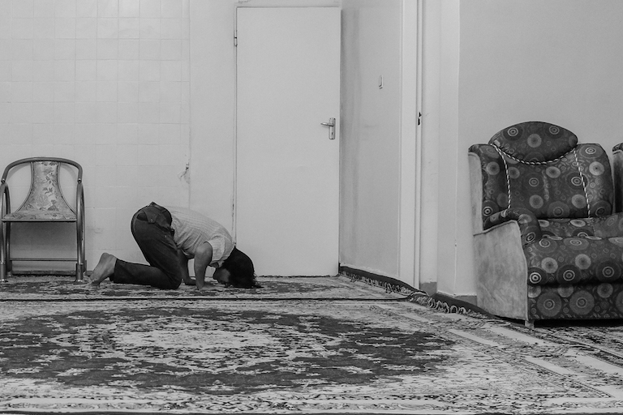
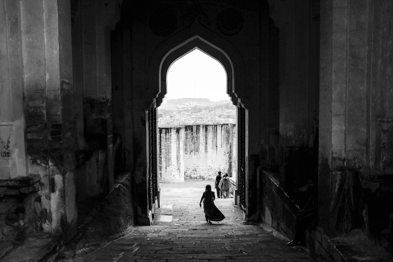

arraste para passar para a próxima foto, ou pressione os pontos debaixo da foto para navegar.
Expresso do Oriente - Planícies da Anatólia, Turquia, 2015

Mosteiro de Sumela - Trabzon, Turquia, 2015

Anahita Invoca os Deuses - Garni, Arménia, 2015

Anoitecer Pantanoso - Fuman, Irão, 2015
O Flautista - Teerão, Irão, 2015
Sozinha - Teerão, Irão, 2015

O Alfaiate de Kashan - Kashan, Irão, 2015

Baldio - Niasar, Irão, 2015

Prece - Joshegan-E Estark, Irão, 2015

Silhueta - Deserto perto de Yazd, Irão, 2015

Na Mesquita - Shiraz, Irão, 2015
Escolta Policial - Taftan, Paquistão, 2015

Adeus - Comboio Bolan Mail, Paquistão, 2015
Guarda Real do Forte de Baltit - Karimabad, Paquistão, 2015

Criança da Montanha - Fairy Meadows, Paquistão, 2015

Reflexo - Lahore, Paquistão, 2015

Fazendeiros de Arroz - Tarn Taran, India, 2015

Paraíso na Terra - Kashmir, 2015

Festim de Bananas - Jaipur, India, 2015

O Portão - Jodhpur, India, 2015

Casa de Chai - Varanasi, India, 2015

Olhar Penetrante - Varanasi, India, 2015

Amizade - Kathmandu, Nepal, 2015

À Volta do Fogo - Kalamaki, Grécia, 2015